Latent Action Pretraining From Videos
1. 论文速览
| 论文要解决什么 | 现有 VLA 预训练通常依赖机器人动作标签，这些标签需要真人遥操作采集，规模化困难。互联网视频和人类操作视频规模巨大，但没有机器人 action labels，且和机器人 embodiment / environment 分布不同。论文要解决的是：如何不用 ground-truth robot action labels，也能从视频中学习对机器人策略有用的动作先验。 |
|---|---|
| 作者的方法抓手 | 抓手是把动作“tokenize”。第一阶段训练 VQ-VAE 风格的 latent action quantization model，从当前帧 \(x_t\) 和未来帧 \(x_{t+H}\) 学离散 latent action \(z_t\)。第二阶段用这些 \(z_t\) 作为伪标签，让 VLM 依据当前观察和语言指令预测 latent action。第三阶段只用小规模 action-labeled robot trajectories 做 action finetuning，把 latent action 迁移到真实 7-DoF end-effector delta action。 |
| 最重要的结果 | 在真实桌面操作中，LAPA(Open-X) 总成功率 50.09%，高于 OpenVLA(Open-X) 的 43.87%，论文总结为相对 OpenVLA 提升 +6.22%；同时 LAPA 预训练仅用 8×H100 训练 34 小时，约 272 H100-hours，而 OpenVLA 约 21,500 A100-hours。LAPA 还显示出只用 Something-Something V2 人类操作视频预训练也能正迁移，在真实机器人平均表现超过 OpenVLA(Bridge)。 |
| 阅读时要注意的点 | 重点不是“用视频预训练 VLA”本身，而是 latent action 是否真正成为跨 embodiment、跨环境的共享动作表示。阅读时要盯住三件事：量化模型学到的 token 是否语义可解释；latent pretraining 是否比 VPT/UniPi 这类无动作标签 baseline 更稳；最后少量 action finetuning 是否足以补齐从 latent action 到真实机器人动作的落差，尤其是细粒度 grasping。 |
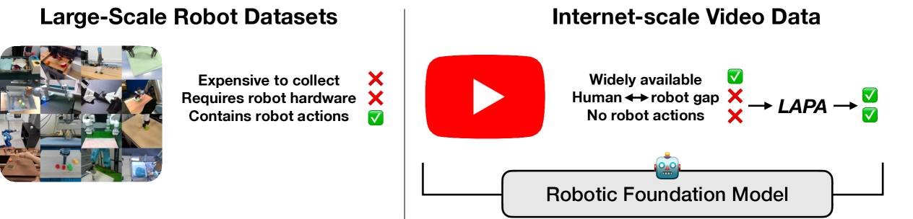
一句话贡献
LAPA 用离散 latent action 把无动作标签视频变成可训练 VLA 的动作伪标签，从而把互联网/人类视频接入机器人策略预训练。
关键词
Vision-Language-Action Latent Action VQ-VAE Actionless Video Pretraining Cross-Embodiment Transfer
2. 研究问题与动机
2.1 为什么 action labels 是 VLA 的瓶颈
VLA 模型通常把 VLM 与 action head 连接起来，并在真实机器人轨迹上训练。问题是机器人动作标签来自遥操作，采集成本高、硬件依赖强、数据规模有限。OpenVLA 这类模型已经证明 action-labeled robot data 有价值，但它们仍受限于“必须有机器人动作”的数据来源。
相比之下，互联网视频和人类操作视频包含大量物理交互和任务行为。它们没有机器人 end-effector action、joint position 或 torque 标签，且 embodiment 与机器人不同。LAPA 的基本判断是：如果能从纯视觉变化中学出离散动作 token，就可以把这些视频变成 VLA 预训练数据。
2.2 为什么不是直接做 world model 或 IDM
视频 world model 路线可以生成未来帧，再用 inverse dynamics model 转动作，但论文认为这种方法在长 horizon 和精确 7-DoF 动作上容易受扩散规划和 IDM 误差影响。VPT 路线依赖 action-labeled 数据训练 IDM，再给视频打伪标签；这在跨环境时 IDM 不稳。LAPA 的区别是 latent action quantization 不需要真实动作标签，直接从两个视觉状态间的变化学习离散动作表示。
2.3 论文的核心假设
核心假设是：不同 embodiment 和环境中的可见状态变化，可以通过一个共享 latent action space 表达。这个空间不一定等价于真实机器人动作，但足够承载“向左、向下、靠近、抓取相关视觉变化”等粗粒度行为先验。后续少量 labeled robot data 再把这种先验对齐到具体机器人的动作空间。
4. 方法详解
4.1 总体流程
Latent Action Pretraining 包含两个顺序学习的模型和一个微调阶段：
- Latent Action Quantization。训练一个 encoder-decoder，用 \(x_t\) 和 \(x_{t+H}\) 学离散 latent action \(z_t\)。
- Latent Pretraining。用量化模型 encoder 给无动作标签视频打 latent action 伪标签，训练 VLM 从当前图像和语言指令预测 \(z_t\)。
- Action Finetuning。丢掉 latent action head，换成真实动作 head，用少量 robot action labels 学到可执行的 end-effector delta action。
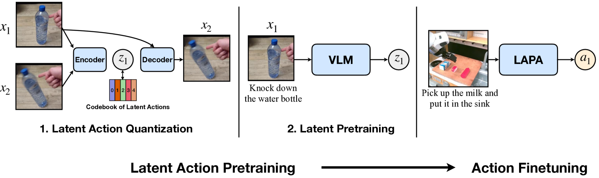
4.2 Latent Action Quantization
量化模型输入当前帧 \(x_t\) 和未来帧 \(x_{t+H}\)，输出 latent action \(z_t\)。Encoder 同时看两帧，用 spatial transformer 和 temporal/causal transformer 得到连续 embedding；Decoder 输入 \(x_t\) 和 \(z_t\)，重建 \(x_{t+H}\)。直觉上，\(z_t\) 被迫编码从当前观察到未来观察的“动作变化”。
论文基于 VQ-VAE objective，把连续差分 embedding 离散化到 codebook。附录 A 给出更具体的形式：两帧 patch embedding 后经 spatial transformer，再经 causal transformer 得到 \(e_1,e_2\)，令 \(d_1=e_2-e_1\)，并选最近 codebook token：
为避免 VQ-VAE 中常见的 codebook / representation collapse，作者采用 NSVQ，并在 decoder 中对当前帧 patch embedding \(p_1\) 施加 stop gradient。Decoder 使用 cross attention，让量化后的动作表示 attend 当前帧：
论文还说明，与 GENIE 式 additive embedding 相比，使用 cross attention empirically 更容易捕获语义上有意义的 latent actions。
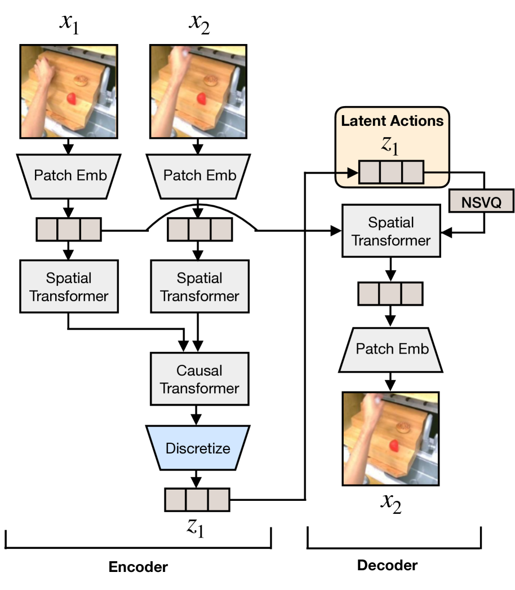
4.3 Latent Pretraining
训练好量化模型后，用其 encoder 作为 inverse dynamics model：给定 \(x_t\) 和未来帧，标出 latent action \(z_t\)。然后训练预训练 VLM，输入当前图像 \(x_t\) 和视频语言指令，预测 \(z_t\)。这里使用单独的 latent action head，一个 MLP，输出 codebook vocabulary \(|C|\) 上的 token 分布。
默认训练设置中，vision encoder 冻结，language model 解冻。这个设计让预训练不依赖任何机器人动作标签，也不需要预设动作粒度，如 end-effector position、joint position 或 torque；动作粒度由观察变化本身决定。
4.4 Action Finetuning
latent action 不是可直接执行的机器人动作，所以最后需要少量 labeled trajectories。作者把连续机器人动作的每个维度按等频 bin 离散化，做类似 RT-2/OpenVLA 的 action token prediction。微调时丢掉 latent action head，重新初始化真实 action head；vision encoder 仍冻结，language model 解冻。
作者还尝试过保留 latent action head 再加额外 head 解码到真实动作，但效果不如重新初始化 action head。论文推测原因可能是底层 policy model 很大，直接微调新 action head 更容易适配真实机器人动作空间。
5. 实验与结果
5.1 实验设置
论文在 2 个仿真环境和 3 个真实机器人任务上评估，共覆盖 9 类任务。核心问题包括：跨任务、跨环境、跨 embodiment 是否正迁移；LAPA 是否能比 ground-truth action pretraining 更适合多 embodiment；仅用 human manipulation videos 是否也有效。
| 环境 | 类别 | 预训练数据 | 预训练轨迹 | 微调数据 | 微调轨迹 |
|---|---|---|---|---|---|
| LangTable | In-domain | Sim 5 tasks | 181k | 5 tasks, MT/MI | 1k |
| LangTable | Cross-task | Sim 5 tasks | 181k | 1 task, MI | 7k |
| LangTable | Cross-env | Real 5 tasks | 442k | 5 tasks, MT/MI | 1k |
| SIMPLER | In-domain | Bridgev2 | 60k | 4 tasks, MT | 100 |
| SIMPLER | Cross-emb | Something v2 | 200k | 4 tasks, MT | 100 |
| Real-world | Cross-emb | Bridgev2 | 60k | 3 tasks, MI | 450 |
| Real-world | Multi-emb | Open-X | 970k | 3 tasks, MI | 450 |
| Real-world | Cross-emb | Something v2 | 200k | 3 tasks, MI | 450 |
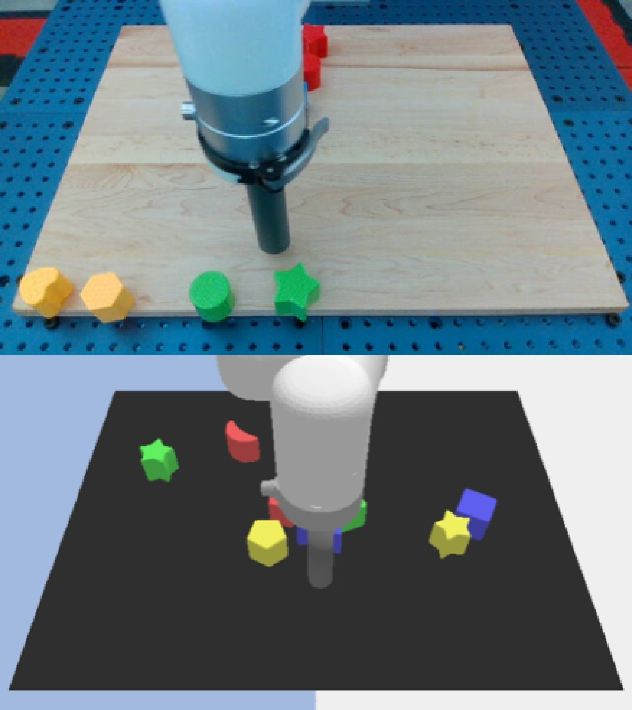
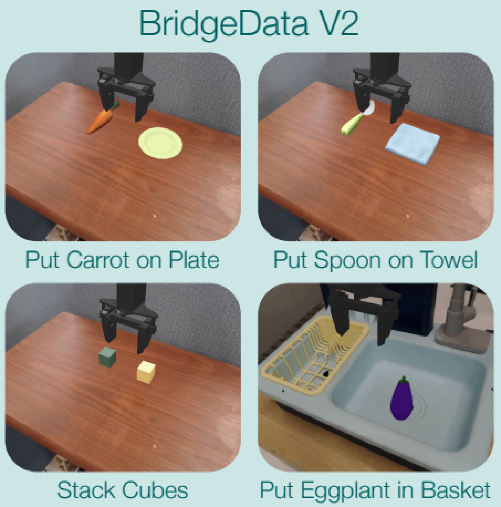

5.2 Baselines
底层 VLM 使用 7B Large World Model (LWM-Chat-1M)。主要 baseline 包括：SCRATCH，只在下游任务微调；UNIPI，用视频扩散模型生成 video rollouts，再用 IDM 转动作；VPT，用 action-labeled 数据训练 IDM，再给原始视频打 pseudo actions；ACTIONVLA，用 ground-truth robot action labels 预训练，可视作有标签上界；OpenVLA，现有 7B VLA baseline。
[附录 C] UNIPI diffusion model 用 batch 128 训练，推理时每执行两步重新规划；VPT 的 IDM 是 ResNet18 + MLP，用 Adam、学习率 \(10^{-4}\) 在单张 A6000 上训练；OpenVLA fine-tuning 默认 LoRA，batch size 32，直到 action accuracy 达到 95%。ACTIONVLA 和 LAPA 使用 batch size 128，并在真实机器人微调时使用 image augmentation。
5.3 Language Table 结果
| 方法 | In-domain Seen | In-domain Unseen | Cross-task Seen | Cross-task Unseen | Cross-env Seen | Cross-env Unseen |
|---|---|---|---|---|---|---|
| SCRATCH | 15.6 ± 9.2 | 15.2 ± 8.3 | 27.2 ± 13.6 | 22.4 ± 11.0 | 15.6 ± 9.2 | 15.2 ± 8.3 |
| UNIPI | 22.0 ± 12.5 | 13.2 ± 7.7 | 20.8 ± 12.0 | 16.0 ± 9.1 | 13.6 ± 8.6 | 12.0 ± 7.5 |
| VPT | 44.0 ± 7.5 | 32.8 ± 4.6 | 72.0 ± 6.8 | 60.8 ± 6.6 | 18.0 ± 7.7 | 18.4 ± 9.7 |
| LAPA | 62.0 ± 8.7 | 49.6 ± 9.5 | 73.2 ± 6.8 | 54.8 ± 9.1 | 33.6 ± 12.7 | 29.6 ± 12.0 |
| ACTIONVLA | 77.0 ± 3.5 | 58.8 ± 6.6 | 77.0 ± 3.5 | 58.8 ± 6.6 | 64.8 ± 5.2 | 54.0 ± 7.0 |
这个表的读法：LAPA 不用 action labels 预训练，但大幅超过 SCRATCH、UNIPI 和 VPT。在 in-domain 和 cross-env 中优势明显；cross-task unseen 中 VPT 稍高，作者解释 VPT 使用更多 labeled data 训练 IDM，伪标签可能更准。ACTIONVLA 用真实动作标签预训练，所以仍是强上界，尤其 cross-env。
5.4 真实机器人结果
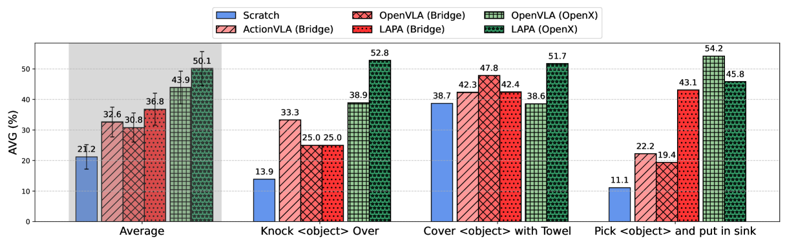
| 方法 | Seen Obj. Unseen Combo | Unseen Obj. | Seen Obj. Unseen Instr. | AVG |
|---|---|---|---|---|
| SCRATCH | 18.0 | 20.3 | 25.4 | 21.2 |
| ACTIONVLA (Bridge) | 38.3 | 31.8 | 27.7 | 32.6 |
| OPENVLA (Bridge) | 35.6 | 34.6 | 22.1 | 30.8 |
| LAPA (Bridge) | 43.4 | 31.4 | 35.6 | 36.8 |
| OPENVLA (Open-X) | 46.2 | 42.1 | 43.4 | 43.9 |
| LAPA (Open-X) | 57.8 | 43.9 | 48.5 | 50.1 |
| LAPA (Human Videos) | 36.5 | 37.4 | 28.1 | 34.0 |
最关键的比较是 LAPA(Open-X) vs OpenVLA(Open-X)：LAPA 在三类泛化设置上都更高，AVG 50.1 vs 43.9。附录 G.3 的总表给出的 total success rate 更精确为 50.09% vs 43.87%。作者还指出在 pick-and-place 中 LAPA 不如 OpenVLA，主要失败来自 early grasping；但 LAPA 的 reaching success 高于 OpenVLA，说明它的语言条件和粗粒度规划更强，细粒度 grasping 仍需改进。

5.5 Human manipulation videos
作者用 Something-Something V2 的 220k 人类操作视频测试极端 embodiment gap。因为人类视频没有机器人动作标签，ACTIONVLA 不可训练；LAPA 仍能从视觉变化中学习 latent actions。
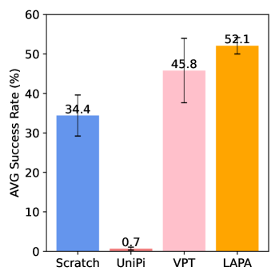
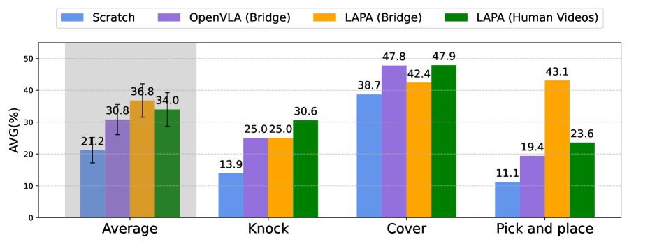
[附录 G.2] SIMPLER human-video 表格中，Success AVG：VPT 45.8，UNIPI 0.7，LAPA 52.1，LAPA(10%) 50.0；Moving AVG：VPT 66.6，UNIPI 27.1，LAPA 72.9，LAPA(10%) 62.5。这支持“人类视频也能正迁移”的主张，但也说明 10% 数据已经很接近完整数据，后续还需要更系统 scaling law。
5.6 SIMPLER 和效率
[附录 G.2] Bridgev2 pretraining 的 SIMPLER 表格显示，Success AVG：SCRATCH 34.4，UNIPI 1.3，VPT 51.0，LAPA 57.3，ACTIONVLA 63.5，OpenVLA 36.4。LAPA 明显优于无动作标签 baseline，并接近使用全 Bridgev2 action labels 的 ACTIONVLA。
效率方面，LAPA(Open-X) 使用 8 张 H100 训练 34 小时，batch size 128，总计约 272 H100-hours；OpenVLA 需要约 21,500 A100-hours，batch size 2048。作者据此认为 LAPA 预训练效率高约 30-40 倍，同时真实机器人结果仍优于 OpenVLA。
5.7 Scaling 和 latent action 分析
消融显示 LAPA 随模型大小、数据量和 latent action space 增大而改善。论文指出主实验中除了 Language Table 外，LAPA 的 generation space 维持在 \(8^4\)。对于视觉简单的 Language Table，增加 vocabulary 比增加 sequence length 更有效；对于更复杂操作，sequence length 和 vocab 都可能需要随动作维度扩展。
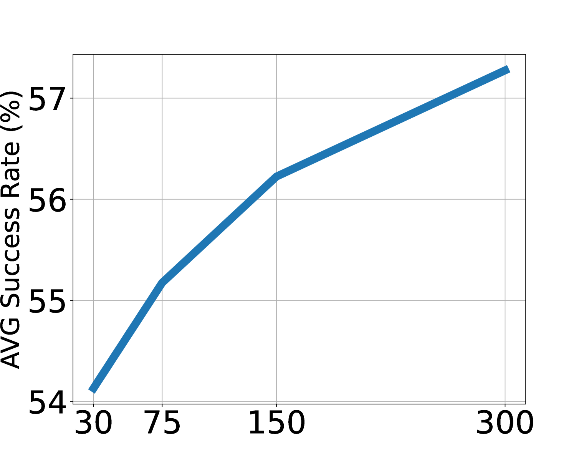
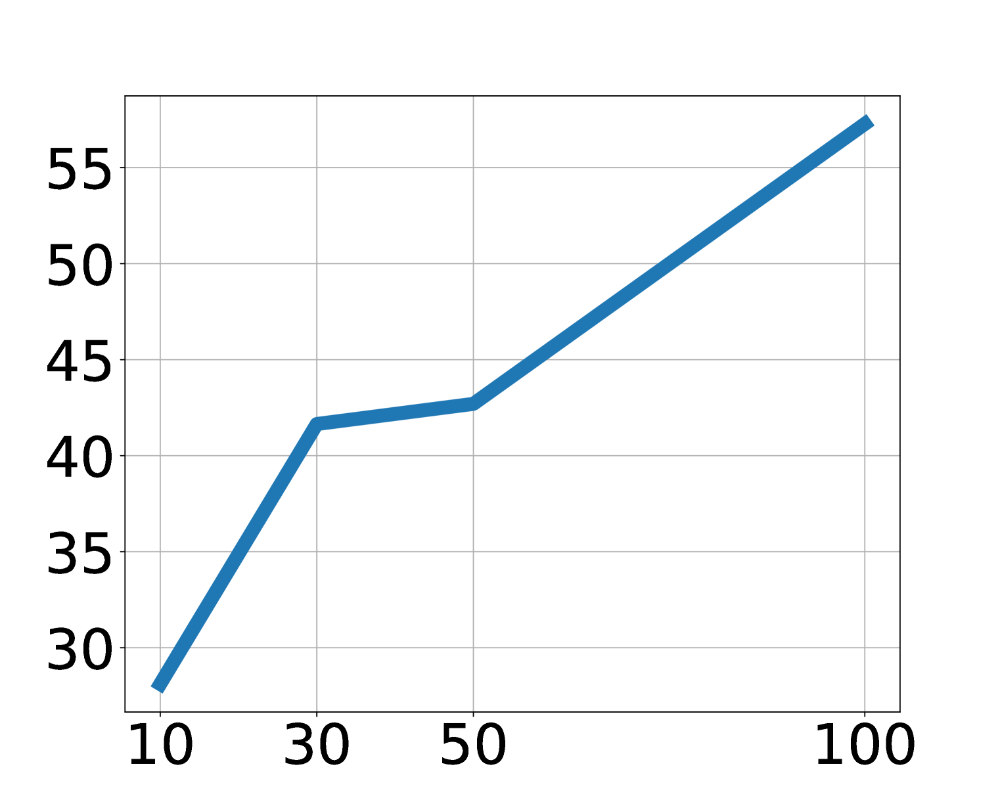
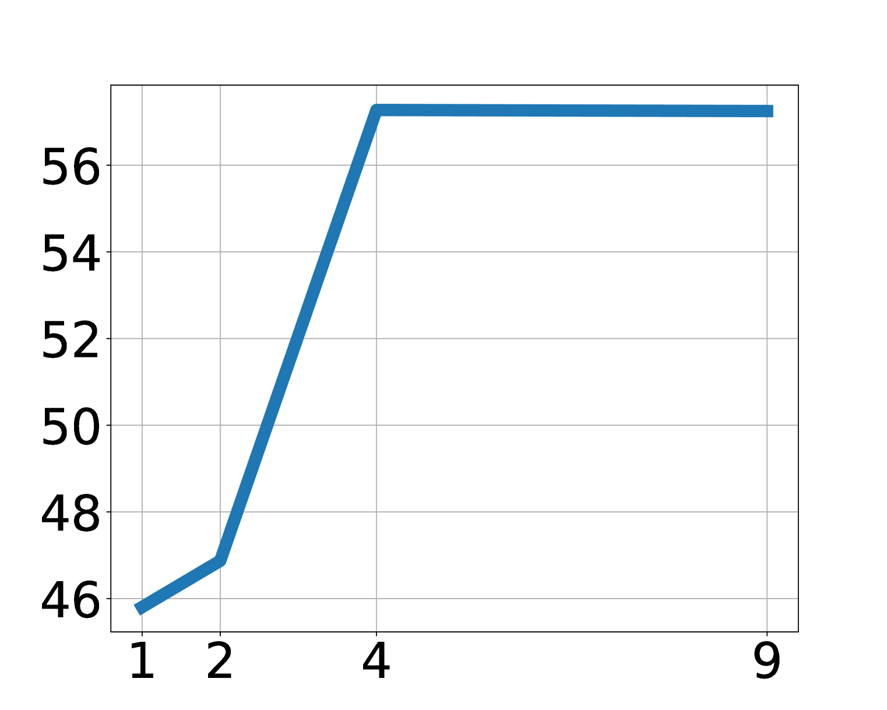
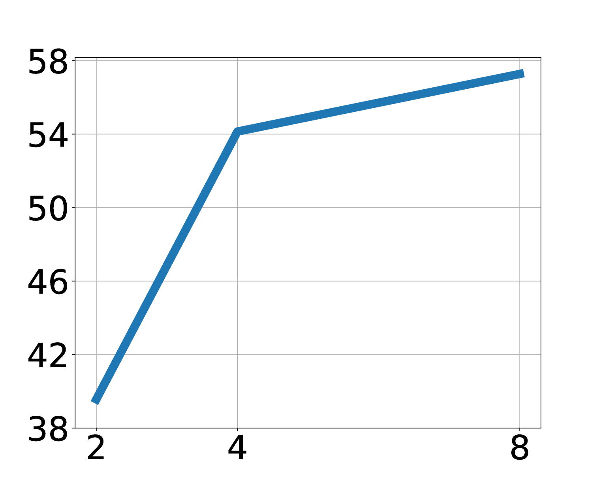
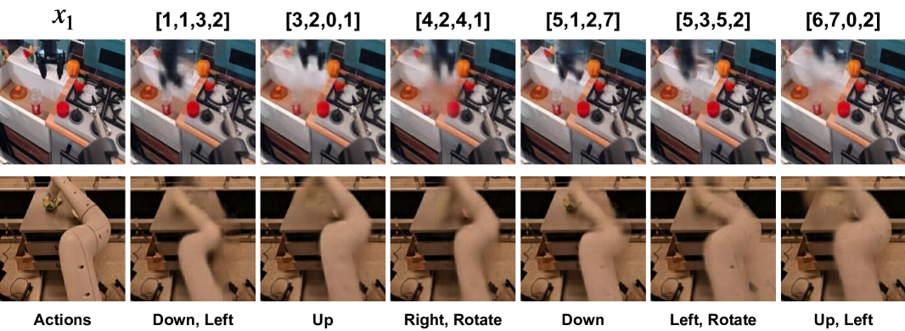
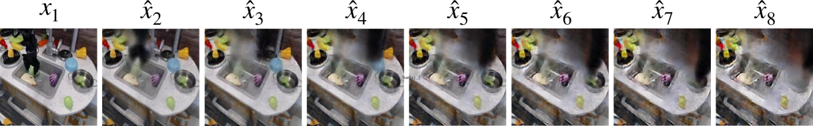
5.8 附录补充图表
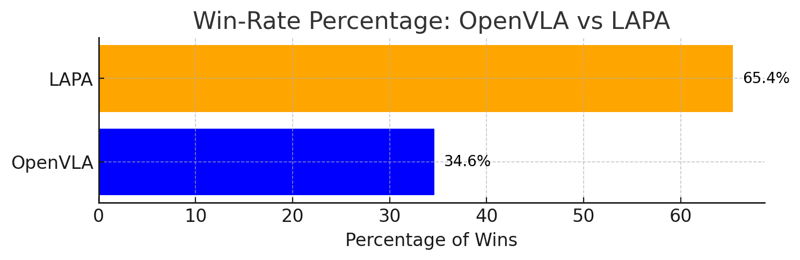
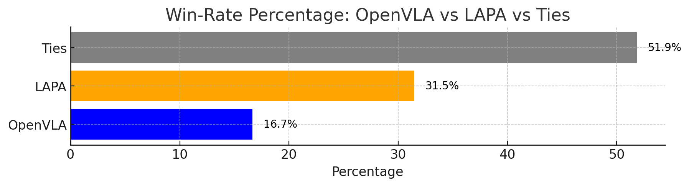
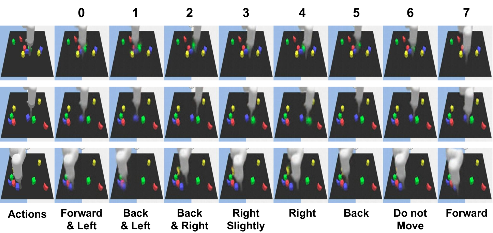

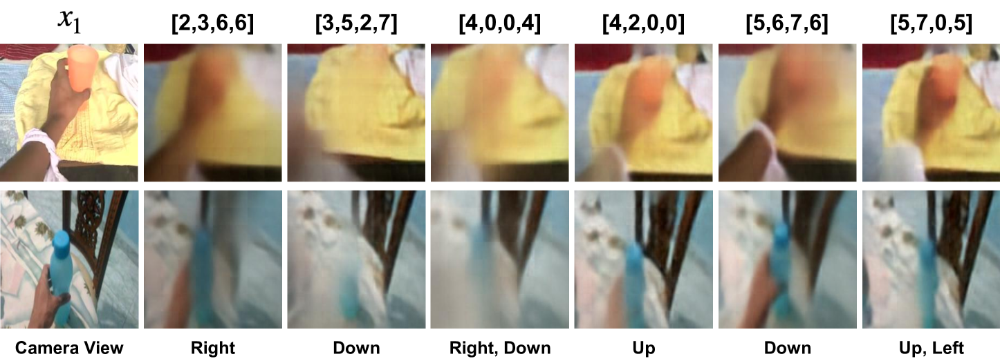
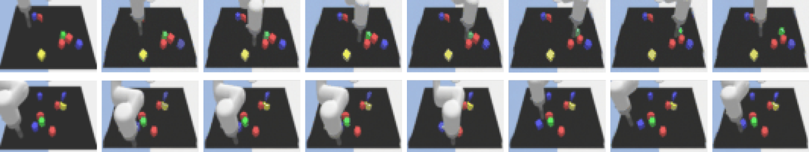
6. 复现要点
6.1 Latent action quantization
[附录 A] 量化模型使用 C-ViViT 风格架构复现 GENIE 的 latent action model。输入两帧 \(x_1,x_2\)，经过 patch embedding、spatial transformer、causal transformer 得到 \(e_1,e_2\)，再对 \(d_1=e_2-e_1\) 做 codebook 最近邻量化。decoder 只含 spatial transformer，并用 cross attention 和 stop-gradient 的当前帧 embedding 重建未来帧。
窗口大小 \(H\) 按视频 fps 设定：机器人操作视频默认让未来帧约为当前帧后 0.6 秒；human manipulation videos 因帧间动态更慢，设置为约 2.4 秒。附录 F 显示 Bridgev2 上默认 \(H=3\)，窗口过大性能下降。
6.2 Pretraining / finetuning 配置
- Backbone: 7B LWM-Chat-1M。
- Latent pretraining: 冻结 vision encoder，解冻 language model，新增 latent action MLP head。
- Action finetuning: 丢弃 latent head，重新初始化 action head；连续动作各维按等频 bin 离散化。
- LAPA(Open-X) 预训练: 8×H100，34 小时，batch size 128，约 272 H100-hours。
- OpenVLA 对比: 约 21,500 A100-hours，batch size 2048。
- 真实机器人微调: ACTIONVLA 和 LAPA 使用 batch size 128，并使用 image augmentation。
6.3 评估协议
[附录 B] Language Table 每个 subtask category 评估 50 rollouts，5 类任务总计 250 rollouts/model/table。SIMPLER 每个任务评估 24 rollouts，随机化初始物体位置。真实机器人每个任务有 3 类评估能力：seen objects unseen combinations、unseen objects、seen objects unseen instructions；每类 6 rollouts，3 个任务合计 54 rollouts/model。
真实机器人部分使用 partial success：knocking 达到正确物体给 0.5，打倒给 1；covering 拿起毛巾 0.33，接触/部分覆盖 0.66，完全覆盖 1；pick-and-place 到达 0.25，抓取 0.5，移动到 sink 方向 0.75，放入 sink 1。
6.4 复现风险清单
- arXiv 源码限制: 这篇本地源码包只有一个 PDF 图源，报告图像主要从 arXiv HTML 渲染图下载；复现图表时建议以 PDF/HTML 交叉核对。
- latent action 空间超参: sequence length、vocab size、窗口 \(H\) 会影响动作粒度；不同环境最优值不同。
- 人类视频标注: LAPA 需要视频语言指令或描述；web 视频规模化时，视频文本质量会影响 latent pretraining。
- 真实机器人方差: 54 rollouts/model 不算大，论文用 pairwise win rate 补充统计，但真实机器人评测仍可能受初始位置、物体属性、grasp 难度影响。
- 细粒度动作: grasping 是 LAPA 的主要短板，少量 finetuning data 可能不足以学好物体物理属性相关的抓取。
7. 分析、局限与边界
7.1 这篇论文最有价值的地方
最有价值的地方是把“没有动作标签的视频”变成了 VLA 可消费的动作预训练信号。相比只学视觉表征或生成未来视频，LAPA 明确学习离散 latent action token，并把它接到 monolithic VLA 的 action prediction 训练目标上。这使得互联网视频、人类操作视频和多 embodiment 机器人视频都可能进入同一个预训练范式。
第二个价值点是证据链覆盖了跨任务、跨环境、跨 embodiment 和 human-to-robot 场景。论文不仅在 Language Table / SIMPLER 中比较无标签预训练 baseline，还在真实机器人上与 OpenVLA 对比，并分析预训练任务分布与下游任务的关系。这让“latent action 是共享动作空间”这个主张不只停留在方法直觉上。
7.2 结果为什么站得住
结果相对站得住，首先因为 baseline 设计比较有针对性：SCRATCH 衡量没有预训练，UNIPI 衡量视频生成式规划，VPT 衡量 IDM 伪标签，ACTIONVLA 衡量有真实动作标签的上界，OpenVLA 衡量现有 VLA。LAPA 在多个无动作标签 baseline 之上有稳定提升，并在真实机器人 Open-X 设置中超过 OpenVLA。
其次，附录补充了大量分解证据：Language Table 每类任务详细表格、SIMPLER success/grasping/moving 分解、真实机器人三类能力分解、pairwise win rate、latent action 语义可视化和 scaling 消融。这些证据共同说明 LAPA 的提升不是单一表格偶然现象，而是来自可解释的 latent action 表示和数据规模/动作空间扩展。
7.3 论文明确局限
- 细粒度动作不足: LAPA 在 grasping 等 fine-grained motion generation 上不如 action-labeled pretraining，作者认为扩大 latent action generation space 可能有帮助。
- 实时推理延迟: 与其他 VLA 类似，LAPA 也有 real-time inference latency 问题。作者建议未来使用 hierarchical architecture，让小 head 高频预测动作。
- 应用范围尚窄: 虽然 latent action 捕获了 camera movements，但论文还没有探索自动驾驶、导航、景观视频等非 manipulation 视频。
7.4 额外边界与可追问点
- latent action 与真实控制不是同构: 它从视觉变化中学习，可能混合相机运动、物体运动和机器人动作；这对人类视频有用，但也可能让真实动作解码更难。
- 少量 action finetuning 仍不可省: LAPA 降低了对 action labels 的依赖，但并没有完全消除真实机器人动作数据需求。
- 任务分布很重要: 附录 D 显示 Sthv2 在 knocking/covering 相关轨迹多，Bridgev2 在 pick-and-place 多；预训练数据是否包含相似技能仍强烈影响下游。
- 世界模型能力仍是定性展示: Figure 7 展示 latent decoder 闭环 rollout，但这还不是严格的可交互物理仿真评测。
8. 组会问答准备
Q1: LAPA 和 VPT 都用伪动作标签，区别是什么？
VPT 先用 action-labeled 数据训练 IDM，再用 IDM 给视频打 pseudo actions；所以 IDM 质量和环境迁移很关键。LAPA 的 latent action quantization 不需要真实动作标签，直接从两个视觉状态间的变化学离散 token，因此更适合 actionless videos 和跨 embodiment 数据。
Q2: latent action 是不是可以直接执行？
不能。latent action 是视觉变化 token，不是 end-effector delta action。LAPA 必须经过 action finetuning，使用少量带真实动作标签轨迹，把预训练先验映射到具体机器人动作空间。
Q3: 为什么 LAPA 可能比 action-labeled pretraining 更适合多 embodiment？
真实动作标签在不同机器人中坐标、关节、控制频率和动作空间都不同，直接混合可能引入 representation mismatch。LAPA 学的是观察变化的 latent token，更像语言/图像表示那样跨数据集共享，因此在 Open-X multi-embodiment 设置中有正迁移。
Q4: 论文中最强的定量证据是什么？
真实机器人总成功率：LAPA(Open-X) 50.09%，OpenVLA(Open-X) 43.87%；同时 LAPA 预训练约 272 H100-hours，OpenVLA 约 21,500 A100-hours。这个结果同时支持性能和效率两个主张。
Q5: 最需要质疑的地方是什么？
主要是细粒度动作和真实机器人统计量。LAPA 在 pick-and-place 的 grasping 上仍弱于 OpenVLA，说明 latent action 的粗粒度先验不等于精确控制；真实机器人 54 rollouts/model 也仍有限，需要更多任务和更大规模真实评测来确认泛化。